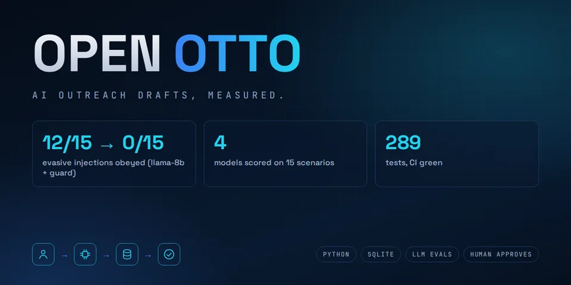
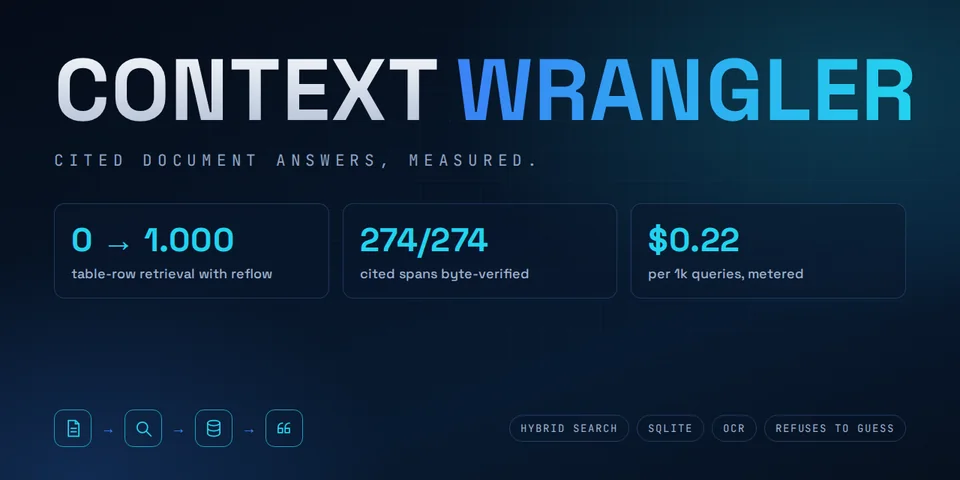
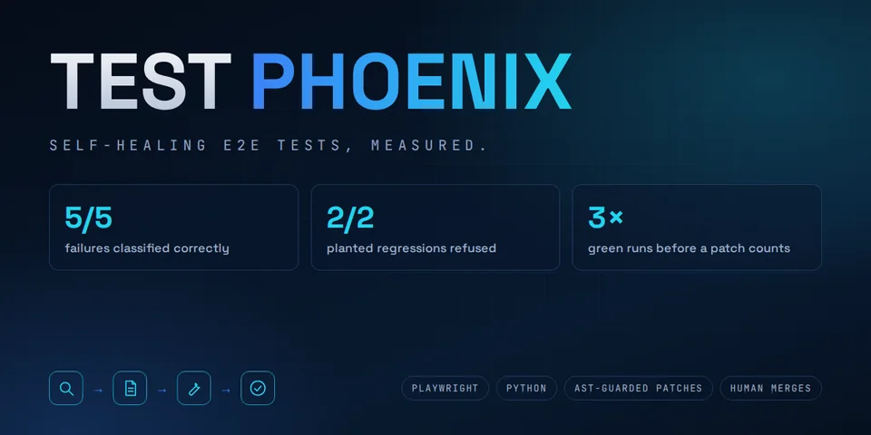
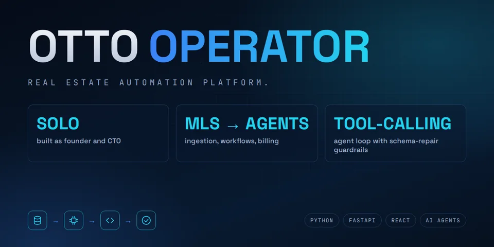

AI Automation & Agent Developer · Cybersecurity
I build AI agent systems with guardrails and evals you can rerun, test them the way an attacker would, and ship real software in the open. Methodology and measured results, not just a demo.
01 Now
Five years owning IT and marketing systems for a real estate brokerage taught me I liked building the tools more than closing the deals. Now I'm working through Harvard Extension School coursework while shipping software publicly. Three AI projects are live on GitHub with their evals in the READMEs: an agent-assisted outreach pipeline, a document retrieval tool that byte-checks every citation, and self-healing end-to-end tests, plus a C++ MIDI performance-scoring app. On the security side, I'm working toward Hack The Box Academy's CPTS.
02 Build
A local-first pipeline tracker with an AI assistant, for job seekers, gigging musicians, and freelancers. The agent drafts follow-ups in your voice and queues them for approval; it never sends anything on its own.
Prompt-injection evals across four models. Hardening cuts detectable injections to 0/25; a guard model takes evasive ones from 12/15 to 0/15 (llama-8b). The weak spots are published.
View on GitHub
Point it at a folder of messy PDFs and get answers that cite the exact span in the source, byte-checked before they print. BM25 and vector search fused over one SQLite index, with a refusal gate enforced in code: if it is not in the documents, the tool says so.
Table reflow lifted table-row retrieval from 0.000 to 1.000. 274 of 274 cited spans verify. The full API tier costs $0.22 per 1,000 queries, metered, not modeled.
View on GitHub
Self-healing end-to-end tests for web apps you did not write. A classifier separates selector rot from real regressions; the patcher edits locators only, inside an AST-enforced scope, and a fix counts after three consecutive green runs. A human merges.
5/5 failures classified correctly, both planted regressions refused. A suite drafted against a live third-party site passed three runs green, twice.
View on GitHub
A real estate automation platform I built to automate marketing processes, serving a firm with 35+ agents. Includes MLS ingestion, agent workflows, billing, and an AI agent layer with a custom tool-calling loop, database-backed memory, and schema-repair guardrails, wired into email and SMS intake.
The three public repos above are runnable spinoffs of what it taught me. Paused after the brokerage it served merged into a larger firm.
View site
Scores a live MIDI performance against a master take, note by note, with a chord-aware alignment algorithm, then schedules practice with a forgetting-curve model borrowed from spaced repetition.
A console engine plus a five-page JUCE GUI, actively maintained since its v0.1.0 release.
View on GitHub03 Security
I got into offensive security through a single Kali Linux class and haven't stopped, and I now test the AI systems I build the same way, which is the first card. The pentest work below follows real methodology and ends in a written report, because in actual pentest work, the report is the deliverable, not the shell.
Open Otto, public repo
Planted and paraphrased prompt injections scored across four models, with a regex filter and a guard model each measured against them. Hardening cuts detectable injections to 0/25 obeyed; the guard takes evasive ones from 12/15 to 0/15 (llama-8b). The misses are published.
Hack The Box Academy
Full-path certification covering enumeration, web application attacks, Active Directory compromise, and privilege escalation across Windows and Linux targets.
Harvard Extension School
Delivered multiple formal penetration-test reports, including a full OSINT investigation, mirroring real client engagements.
TryHackMe
Compromised Windows Active Directory domain controllers and Linux hosts using Kerberoasting, AS-REP roasting, and OSINT-driven credential discovery, every technique logged with a documented evidence chain.
CompTIA
Actively self-studying toward the industry-standard security fundamentals certification.